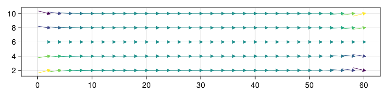

Magnetization state of a nanobar


In this example, we consider a nanobar with dimensions 60nm x 10nm x 5 nm We first import JuMag
using JuMag
using Random
using NPZWe create a FDMesh, which means that this program will be run using CPU.
mesh = FDMesh(dx=2e-9, dy=2e-9, dz=2.5e-9, nx=30, ny=5, nz=2);We create a Sim wth SD driver
sim = Sim(mesh, driver="SD", name="bar");[ Info: Standard Sim (CPU) has been used.
We set the saturation magnetization of the system.
set_Ms(sim, 8e5)trueWe consider two energies, i.e., exchange and demag
add_exch(sim, 1.3e-12, name="exch")
add_demag(sim, name="demag");We use the random initial state, we set a seed to make our program repeatable
Random.seed!(12345)
init_m0_random(sim);Save the initial magnetization state for later comparsion npzwrite("bar_init.npy", Array(sim.spin))
Relax the system to obtain the magnetization distribution. The stopping criteria is the stopping_dmdt, typically its value should be in the rangle of [0.01, 1].
relax(sim, maxsteps=2000, stopping_dmdt=0.01)[ Info: Running Driver : JuMag.EnergyMinimization.
[ Info: step = 1 step_size=1.885533e-11 max_dmdt=5.674491e+03
[ Info: step = 2 step_size=1.032318e-11 max_dmdt=9.178414e+03
[ Info: step = 3 step_size=4.060156e-12 max_dmdt=1.602224e+04
[ Info: step = 4 step_size=3.385442e-12 max_dmdt=1.273819e+04
[ Info: step = 5 step_size=2.042857e-12 max_dmdt=1.016822e+04
[ Info: step = 6 step_size=3.228600e-12 max_dmdt=9.844471e+03
[ Info: step = 7 step_size=2.766879e-12 max_dmdt=8.615849e+03
[ Info: step = 8 step_size=1.338206e-11 max_dmdt=5.669084e+03
[ Info: step = 9 step_size=4.032488e-12 max_dmdt=6.966389e+03
[ Info: step = 10 step_size=2.266220e-12 max_dmdt=9.056327e+03
[ Info: step = 11 step_size=1.610165e-12 max_dmdt=4.036991e+03
[ Info: step = 12 step_size=2.323359e-12 max_dmdt=2.071755e+03
[ Info: step = 13 step_size=9.182234e-12 max_dmdt=1.904238e+03
[ Info: step = 14 step_size=2.965704e-11 max_dmdt=1.418571e+03
[ Info: step = 15 step_size=3.353647e-12 max_dmdt=5.696560e+03
[ Info: step = 16 step_size=1.574264e-12 max_dmdt=6.616868e+03
[ Info: step = 17 step_size=1.523669e-12 max_dmdt=6.481265e+02
[ Info: step = 18 step_size=6.170027e-12 max_dmdt=4.534774e+02
[ Info: step = 19 step_size=1.172904e-11 max_dmdt=3.123346e+02
[ Info: step = 20 step_size=2.178535e-11 max_dmdt=3.030206e+02
[ Info: step = 21 step_size=1.912808e-12 max_dmdt=2.394706e+03
[ Info: step = 22 step_size=1.753279e-12 max_dmdt=3.527555e+02
[ Info: step = 23 step_size=1.662597e-12 max_dmdt=1.273461e+02
[ Info: step = 24 step_size=4.243435e-12 max_dmdt=6.264256e+01
[ Info: step = 25 step_size=4.410505e-12 max_dmdt=4.453154e+01
[ Info: step = 26 step_size=2.173987e-11 max_dmdt=4.571319e+01
[ Info: step = 27 step_size=2.122698e-12 max_dmdt=1.951866e+02
[ Info: step = 28 step_size=1.561581e-12 max_dmdt=8.644511e+01
[ Info: step = 29 step_size=1.508329e-12 max_dmdt=3.344878e+01
[ Info: step = 30 step_size=2.922140e-11 max_dmdt=3.287709e+01
[ Info: step = 31 step_size=1.847604e-11 max_dmdt=3.529492e+01
[ Info: step = 32 step_size=5.211494e-12 max_dmdt=2.174803e+02
[ Info: step = 33 step_size=2.655282e-12 max_dmdt=2.163525e+02
[ Info: step = 34 step_size=2.654422e-12 max_dmdt=1.964593e+01
[ Info: step = 35 step_size=1.715149e-12 max_dmdt=1.897672e+01
[ Info: step = 36 step_size=7.705769e-12 max_dmdt=1.871389e+01
[ Info: step = 37 step_size=5.429588e-12 max_dmdt=1.755231e+01
[ Info: step = 38 step_size=1.558322e-11 max_dmdt=1.680325e+01
[ Info: step = 39 step_size=1.528945e-12 max_dmdt=6.971837e+01
[ Info: step = 40 step_size=1.519209e-12 max_dmdt=1.439938e+01
[ Info: step = 41 step_size=2.137723e-12 max_dmdt=1.415448e+01
[ Info: step = 42 step_size=1.101900e-10 max_dmdt=1.388633e+01
[ Info: step = 43 step_size=1.064298e-10 max_dmdt=4.109715e+00
[ Info: step = 44 step_size=2.978452e-12 max_dmdt=1.708015e+02
[ Info: step = 45 step_size=2.153211e-12 max_dmdt=5.404257e+01
[ Info: step = 46 step_size=1.569943e-12 max_dmdt=1.822281e+01
[ Info: step = 47 step_size=1.509907e-12 max_dmdt=2.645927e+00
[ Info: step = 48 step_size=3.840079e-12 max_dmdt=2.127082e+00
[ Info: step = 49 step_size=5.195124e-12 max_dmdt=1.144621e+00
[ Info: step = 50 step_size=1.706044e-11 max_dmdt=6.273495e-01
[ Info: step = 51 step_size=5.122122e-12 max_dmdt=1.186704e+00
[ Info: step = 52 step_size=2.278259e-12 max_dmdt=1.506045e+00
[ Info: step = 53 step_size=1.845653e-12 max_dmdt=5.657991e-01
[ Info: step = 54 step_size=2.271530e-12 max_dmdt=2.276645e-01
[ Info: step = 55 step_size=2.407179e-12 max_dmdt=1.949147e-01
[ Info: step = 56 step_size=2.346614e-11 max_dmdt=1.718227e-01
[ Info: step = 57 step_size=7.325608e-12 max_dmdt=2.910717e-01
[ Info: step = 58 step_size=1.612929e-12 max_dmdt=1.054693e+00
[ Info: step = 59 step_size=1.502505e-12 max_dmdt=9.751789e-02
[ Info: step = 60 step_size=2.173476e-12 max_dmdt=3.998490e-02
[ Info: step = 61 step_size=3.003576e-11 max_dmdt=3.870627e-02
[ Info: step = 62 step_size=3.960911e-11 max_dmdt=3.214505e-02
[ Info: step = 63 step_size=5.139157e-12 max_dmdt=8.288294e-02
[ Info: step = 64 step_size=2.527028e-12 max_dmdt=1.032435e-01
[ Info: step = 65 step_size=1.614982e-12 max_dmdt=5.389405e-02
[ Info: step = 66 step_size=1.649726e-12 max_dmdt=2.235808e-02
[ Info: step = 67 step_size=2.427525e-12 max_dmdt=2.076138e-02
[ Info: step = 68 step_size=2.637632e-11 max_dmdt=1.904610e-02
[ Info: step = 69 step_size=1.216424e-11 max_dmdt=1.753879e-02
[ Info: step = 70 step_size=7.981596e-12 max_dmdt=2.479750e-02
[ Info: step = 71 step_size=1.530424e-12 max_dmdt=1.021715e-01
[ Info: step = 72 step_size=1.513427e-12 max_dmdt=1.166127e-02
[ Info: step = 73 step_size=2.369210e-12 max_dmdt=1.061397e-02
[ Info: step = 74 step_size=1.793095e-11 max_dmdt=1.017376e-02
[ Info: step = 75 step_size=8.464727e-12 max_dmdt=9.670715e-03
[ Info: max_dmdt is less than stopping_dmdt=0.01, Done!
Save the magnetization state for later postprocessing
npzwrite("bar.npy", Array(sim.spin))Save the vtk as well, which can be visualization using Paraview (https://www.paraview.org/)
save_vtk(sim, "bar", fields=["exch", "demag"])1-element Vector{String}:
"bar.vts"We use the following script to plot the magnetization
using CairoMakie
function plot_spatial_m()
folder = @__DIR__
m = npzread(folder*"/bar.npy")
nx, ny, nz = 30, 5, 2
xs = [i*2 for i=1:nx]
ys = [j*2 for j=1:ny]
m = reshape(m, 3, nx, ny, nz)
mx = m[1,:,:,1]
my = m[2,:,:,1]
fig = Figure(resolution = (800, 200))
ax = Axis(fig[1, 1], backgroundcolor = "white")
arrows!(ax, xs, ys, mx, my, arrowsize = 10, lengthscale = 2,
arrowcolor = vec(my), linecolor = vec(my), align = :center)
return fig
end
plot_spatial_m()
This page was generated using DemoCards.jl and Literate.jl.